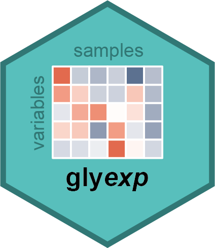

Convert a glycomics container to a long-format tibble
Source:R/as-tibble.R
as_tibble.GlycomicSE.RdEach row represents one variable and sample pair, including missing abundance
values. Variables follow row order, with samples varying fastest.
Sample and variable identifiers come from the dimension names; missing names
are represented by NA_character_. Annotations are matched by position.
Usage
# S3 method for class 'GlycomicSE'
as_tibble(
x,
sample_cols = tidyselect::everything(),
var_cols = tidyselect::everything(),
...
)
# S3 method for class 'GlycoproteomicSE'
as_tibble(
x,
sample_cols = tidyselect::everything(),
var_cols = tidyselect::everything(),
...
)Arguments
- x
A
GlycomicSE()orGlycoproteomicSE()object.- sample_cols, var_cols
Tidy-select expressions selecting annotations from
colData(x)androwData(x), respectively. Defaults to all columns. UseNULLto omit annotations.- ...
Ignored.
Value
A tibble with sample, sample annotations, variable, variable
annotations, and value columns. Conflicting annotation names receive unique
suffixes; sample, variable, and value retain their names.
Examples
tibble::as_tibble(real_experiment2, sample_cols = NULL, var_cols = NULL)
#> # A tibble: 9,504 × 3
#> sample variable value
#> <chr> <chr> <dbl>
#> 1 S1 Hex(3)HexNAc(3) 1354.
#> 2 S2 Hex(3)HexNAc(3) 1884.
#> 3 S3 Hex(3)HexNAc(3) 1389.
#> 4 S4 Hex(3)HexNAc(3) 2035.
#> 5 S5 Hex(3)HexNAc(3) 1473.
#> 6 S6 Hex(3)HexNAc(3) 1312.
#> 7 S7 Hex(3)HexNAc(3) 1521.
#> 8 S8 Hex(3)HexNAc(3) 1374.
#> 9 S9 Hex(3)HexNAc(3) 1168.
#> 10 S10 Hex(3)HexNAc(3) 1538.
#> # ℹ 9,494 more rows